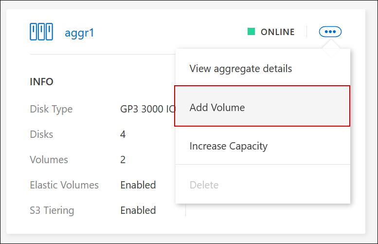
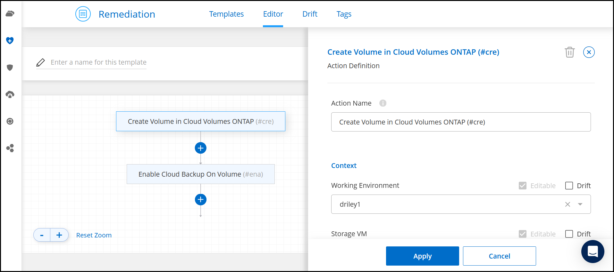
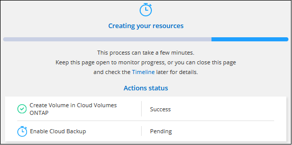

Versionshinweise
Versionshinweise
FlexVol Volumes erstellen
 Änderungen vorschlagen
Änderungen vorschlagen
Falls Sie nach dem Start des Cloud Volumes ONTAP-Systems mehr Speicherplatz benötigen, können Sie aus BlueXP neue FlexVol Volumes für NFS, CIFS oder iSCSI erstellen.
BlueXP bietet verschiedene Möglichkeiten zur Erstellung eines neuen Volumes:
-
Geben Sie Details für ein neues Volume an, und BlueXP kann die zugrunde liegenden Datenaggregate für Sie verarbeiten. Weitere Informationen .
-
Erstellen Sie ein Volume auf einem Datenaggregat Ihrer Wahl. Weitere Informationen .
-
Erstellen Sie ein Volume aus einer Vorlage, um das Volume gemäß den Workload-Anforderungen bestimmter Applikationen, wie z. B. Datenbanken oder Streaming-Services, zu optimieren. Weitere Informationen .
-
Erstellung eines Volumes auf dem zweiten Node in einer HA-Konfiguration Weitere Informationen .
Bevor Sie beginnen
Ein paar Anmerkungen zur Volume-Bereitstellung:
-
Wenn Sie ein iSCSI-Volume erstellen, erstellt BlueXP automatisch eine LUN für Sie. Wir haben es einfach gemacht, indem wir nur eine LUN pro Volumen erstellen, so gibt es keine Verwaltung beteiligt. Nachdem Sie das Volume erstellt haben, "Verwenden Sie den IQN, um von den Hosts eine Verbindung zur LUN herzustellen".
-
Sie können weitere LUNs aus System Manager oder der CLI erstellen.
-
Wenn Sie CIFS in AWS verwenden möchten, müssen Sie DNS und Active Directory eingerichtet haben. Weitere Informationen finden Sie unter "Netzwerkanforderungen für Cloud Volumes ONTAP für AWS".
-
Wenn Ihre Cloud Volumes ONTAP Konfiguration die Elastic Volumes Funktion von Amazon EBS unterstützt, könnten Sie dies möglicherweise tun "Erfahren Sie mehr darüber, was bei der Erstellung eines Volumes passiert".
Erstellen eines Volumes
Die häufigste Methode zur Erstellung eines Volumes besteht darin, den erforderlichen Volume-Typ anzugeben, und BlueXP übernimmt dann die Festplattenzuordnung für Sie. Aber Sie haben auch die Möglichkeit, das spezifische Aggregat zu wählen, auf dem Sie das Volume erstellen möchten.
-
Wählen Sie im linken Navigationsmenü die Option Speicherung > Leinwand.
-
Doppelklicken Sie auf der Seite Arbeitsfläche auf den Namen des Cloud Volumes ONTAP-Systems, auf dem Sie ein FlexVol-Volume bereitstellen möchten.
-
Erstellen Sie ein neues Volume, indem Sie BlueXP die Festplattenzuordnung für Sie übernehmen oder ein bestimmtes Aggregat für das Volume auswählen.
Die Auswahl eines bestimmten Aggregats ist nur dann empfehlenswert, wenn Sie Verständnis der Datenaggregate auf Ihrem Cloud Volumes ONTAP System haben.
Alle AggregateNavigieren Sie auf der Registerkarte Übersicht zur Kachel Volumes, und klicken Sie auf Volume hinzufügen.
 Spezifische Aggregate
Spezifische AggregateNavigieren Sie auf der Registerkarte Aggregate zur gewünschten Aggregat-Kachel. Klicken Sie auf das Menüsymbol und dann auf Volume hinzufügen.

-
Befolgen Sie die Schritte im Assistenten, um das Volume zu erstellen.
-
Volumes, Details, Protection und Tags: Geben Sie grundlegende Details zum Volume ein und wählen Sie eine Snapshot-Richtlinie aus.
Einige der Felder auf dieser Seite sind selbsterklärend. In der folgenden Liste werden die Felder beschrieben, für die Sie möglicherweise Hinweise benötigen:
Feld Beschreibung Volume-Name
Der identifizierbare Name, den Sie für das neue Volume eingeben können.
Volume-Größe
Die maximale Größe, die Sie eingeben können, hängt weitgehend davon ab, ob Sie Thin Provisioning aktivieren, wodurch Sie ein Volume erstellen können, das größer ist als der derzeit verfügbare physische Storage.
Tags
Tags, die Sie einem Volume hinzufügen, werden dem zugeordnet "Applikationsvorlagen-Service", Die Ihnen helfen, die Verwaltung Ihrer Ressourcen zu organisieren und zu vereinfachen.
Storage-VM (SVM)
Eine Storage VM ist eine Virtual Machine, die in ONTAP ausgeführt wird und Ihren Kunden Storage und Datenservices zur Verfügung stellt. Sie können dies als SVM oder vServer wissen. Cloud Volumes ONTAP ist standardmäßig mit einer Storage-VM konfiguriert, aber einige Konfigurationen unterstützen zusätzliche Storage-VMs. Sie können die Storage-VM für das neue Volume angeben.
Snapshot-Richtlinie
Eine Snapshot Kopierrichtlinie gibt die Häufigkeit und Anzahl der automatisch erstellten NetApp Snapshot Kopien an. Bei einer NetApp Snapshot Kopie handelt es sich um ein zeitpunktgenaues Filesystem Image, das keine Performance-Einbußen aufweist und minimalen Storage erfordert. Sie können die Standardrichtlinie oder keine auswählen. Sie können keine für transiente Daten auswählen, z. B. tempdb für Microsoft SQL Server.
-
Protokoll: Wählen Sie ein Protokoll für das Volume (NFS, CIFS oder iSCSI) und geben Sie dann die erforderlichen Informationen.
Wenn Sie CIFS auswählen und ein Server nicht eingerichtet ist, werden Sie von BlueXP aufgefordert, eine CIFS-Verbindung einzurichten, nachdem Sie auf Weiter klicken.
In den folgenden Abschnitten werden die Felder beschrieben, für die Sie ggf. Hilfestellung benötigen. Die Beschreibungen sind nach Protokoll geordnet.
NFS- Zugriffssteuerung
-
Wählen Sie eine benutzerdefinierte Exportrichtlinie aus, um das Volume den Clients zur Verfügung zu stellen.
- Exportrichtlinie
-
Definiert die Clients im Subnetz, die auf das Volume zugreifen können. Standardmäßig gibt BlueXP einen Wert ein, der Zugriff auf alle Instanzen im Subnetz bietet.
CIFS- Berechtigungen und Benutzer/Gruppen
-
Ermöglicht Ihnen, die Zugriffsebene für eine SMB-Freigabe für Benutzer und Gruppen (auch Zugriffssteuerungslisten oder ACLs) zu steuern. Sie können lokale oder domänenbasierte Windows-Benutzer oder -Gruppen oder UNIX-Benutzer oder -Gruppen angeben. Wenn Sie einen Windows-Benutzernamen für die Domäne angeben, müssen Sie die Domäne des Benutzers mit dem Format Domäne\Benutzername einschließen.
- Primäre und sekundäre DNS-IP-Adresse
-
Die IP-Adressen der DNS-Server, die die Namensauflösung für den CIFS-Server bereitstellen. Die aufgeführten DNS-Server müssen die Servicestandortdatensätze (SRV) enthalten, die zum Auffinden der Active Directory LDAP-Server und Domänencontroller für die Domain, der der CIFS-Server beitreten wird, erforderlich sind.
Wenn Sie Google Managed Active Directory konfigurieren, kann standardmäßig mit der IP-Adresse 169.254.169.254 auf AD zugegriffen werden.
- Active Directory-Domäne, der Sie beitreten möchten
-
Der FQDN der Active Directory (AD)-Domain, der der CIFS-Server beitreten soll.
- Anmeldeinformationen, die zur Aufnahme in die Domäne autorisiert sind
-
Der Name und das Kennwort eines Windows-Kontos mit ausreichenden Berechtigungen zum Hinzufügen von Computern zur angegebenen Organisationseinheit (OU) innerhalb der AD-Domäne.
- CIFS-Server-BIOS-Name
-
Ein CIFS-Servername, der in der AD-Domain eindeutig ist.
- Organisationseinheit
-
Die Organisationseinheit innerhalb der AD-Domain, die dem CIFS-Server zugeordnet werden soll. Der Standardwert lautet CN=Computers.
-
Um von AWS verwaltete Microsoft AD als AD-Server für Cloud Volumes ONTAP zu konfigurieren, geben Sie in diesem Feld OU=Computers,OU=corp ein.
-
Um Azure AD-Domänendienste als AD-Server für Cloud Volumes ONTAP zu konfigurieren, geben Sie in diesem Feld OU=AADDC-Computer oder OU=AADDC-Benutzer ein.
"Azure-Dokumentation: Erstellen Sie eine Organisationseinheit (Organisationseinheit, OU) in einer von Azure AD-Domänendiensten gemanagten Domäne" -
Um von Google verwaltete Microsoft AD als AD-Server für Cloud Volumes ONTAP zu konfigurieren, geben Sie in diesem Feld OU=Computer,OU=Cloud ein.
"Google Cloud Documentation: Organizational Units in Google Managed Microsoft AD"
-
- DNS-Domäne
-
Die DNS-Domain für die Cloud Volumes ONTAP Storage Virtual Machine (SVM). In den meisten Fällen entspricht die Domäne der AD-Domäne.
- NTP-Server
-
Wählen Sie Active Directory-Domäne verwenden aus, um einen NTP-Server mit Active Directory-DNS zu konfigurieren. Wenn Sie einen NTP-Server mit einer anderen Adresse konfigurieren müssen, sollten Sie die API verwenden. Siehe "BlueXP Automation Dokumentation" Entsprechende Details.
Beachten Sie, dass Sie einen NTP-Server nur beim Erstellen eines CIFS-Servers konfigurieren können. Er ist nicht konfigurierbar, nachdem Sie den CIFS-Server erstellt haben.
ISCSI- LUN
-
ISCSI-Storage-Ziele werden LUNs (logische Einheiten) genannt und Hosts als Standard-Block-Geräte präsentiert. Wenn Sie ein iSCSI-Volume erstellen, erstellt BlueXP automatisch eine LUN für Sie. Wir haben es einfach gemacht, indem wir nur eine LUN pro Volumen erstellen, so dass es keine Verwaltung beteiligt ist. Nachdem Sie das Volume erstellt haben, "Verwenden Sie den IQN, um von den Hosts eine Verbindung zur LUN herzustellen".
- Initiatorgruppe
-
Initiatorgruppen geben an, welche Hosts auf angegebene LUNs im Storage-System zugreifen können
- Host-Initiator (IQN)
-
ISCSI-Ziele werden über standardmäßige Ethernet-Netzwerkadapter (NICs), TCP Offload Engine (TOE) Karten mit Software-Initiatoren, konvergierte Netzwerkadapter (CNAs) oder dedizierte Host Bust Adapter (HBAs) mit dem Netzwerk verbunden und durch iSCSI Qualified Names (IQNs) identifiziert.
-
Festplattentyp: Wählen Sie einen zugrunde liegenden Disk-Typ für das Volumen basierend auf Ihren Leistungsanforderungen und Kostenanforderungen.
-
-
Nutzungsprofil & Tiering Policy: Wählen Sie aus, ob Sie Funktionen für die Speichereffizienz auf dem Volume aktivieren oder deaktivieren und dann ein auswählen "Volume Tiering-Richtlinie".
ONTAP umfasst mehrere Storage-Effizienzfunktionen, mit denen Sie die benötigte Storage-Gesamtmenge reduzieren können. NetApp Storage-Effizienzfunktionen bieten folgende Vorteile:
- Thin Provisioning
-
Bietet Hosts oder Benutzern mehr logischen Storage als in Ihrem physischen Storage-Pool. Anstatt Storage vorab zuzuweisen, wird jedem Volume beim Schreiben von Daten dynamisch Speicherplatz zugewiesen.
- Deduplizierung
-
Verbessert die Effizienz, indem identische Datenblöcke lokalisiert und durch Verweise auf einen einzelnen gemeinsam genutzten Block ersetzt werden. Durch diese Technik werden die Storage-Kapazitätsanforderungen reduziert, da redundante Datenblöcke im selben Volume eliminiert werden.
- Komprimierung
-
Reduziert die physische Kapazität, die zum Speichern von Daten erforderlich ist, indem Daten in einem Volume auf primärem, sekundärem und Archiv-Storage komprimiert werden.
-
Review: Überprüfen Sie die Details über die Lautstärke und klicken Sie dann auf Hinzufügen.
BlueXP erstellt das Volume auf dem Cloud Volumes ONTAP System.
Erstellen Sie ein Volume anhand einer Vorlage
Wenn Ihr Unternehmen Cloud Volumes ONTAP Volume-Vorlagen erstellt hat, damit Sie Volumes implementieren können, die für die Workload-Anforderungen bestimmter Applikationen optimiert sind, befolgen Sie diese Schritte in diesem Abschnitt.
Die Vorlage sollte Ihnen die Arbeit erleichtern, da bestimmte Volume-Parameter bereits in der Vorlage definiert werden, z. B. Festplattentyp,-Größe, Protokoll, Snapshot-Richtlinie, Cloud-Provider, Und vieles mehr. Wenn ein Parameter bereits vordefiniert ist, können Sie einfach zum nächsten Volume-Parameter springen.

|
NFS- oder CIFS-Volumes können nur mit Vorlagen erstellt werden. |
-
Wählen Sie im linken Navigationsmenü die Option Speicherung > Leinwand.
-
Klicken Sie auf der Seite Arbeitsfläche auf den Namen des Cloud Volumes ONTAP-Systems, auf dem Sie ein Volume bereitstellen möchten.
-
Navigieren Sie zur Registerkarte Volumes und klicken Sie auf Volume hinzufügen > Neues Volume aus Vorlage.

-
Wählen Sie auf der Seite Vorlage auswählen die Vorlage aus, die Sie zum Erstellen des Volumes verwenden möchten, und klicken Sie auf Weiter.

Die Seite Editor wird angezeigt.

-
Geben Sie über dem Action-Feld einen Namen für die Vorlage ein.
-
Unter context wird die Arbeitsumgebung mit dem Namen der Arbeitsumgebung, mit der Sie begonnen haben, ausgefüllt. Wählen Sie die Speicher-VM aus, auf der das Volume erstellt werden soll.
-
Fügen Sie Werte für alle Parameter hinzu, die nicht hartcodiert sind. Siehe Erstellen eines Volumes Bietet Details zu allen Parametern, die erforderlich sind, um die Implementierung eines Cloud Volumes ONTAP Volumes abzuschließen.
-
Klicken Sie auf Apply, um die konfigurierten Parameter in der ausgewählten Aktion zu speichern.
-
Wenn keine weiteren Aktionen definiert werden müssen (z. B. Konfiguration von BlueXP Backup und Recovery), klicken Sie auf Vorlage speichern.
Wenn es andere Aktionen gibt, klicken Sie im linken Fensterbereich auf die Aktion, um die erforderlichen Parameter anzuzeigen.

Wenn Sie beispielsweise für die Aktion Cloud Backup auf Volume aktivieren eine Backup-Richtlinie auswählen müssen, können Sie dies jetzt tun.
-
Sobald die Konfiguration für die Vorlagenaktionen abgeschlossen ist, klicken Sie auf Vorlage speichern.
Cloud Volumes ONTAP stellt das Volume bereit und zeigt eine Seite an, sodass der Fortschritt angezeigt wird.

Wenn außerdem eine sekundäre Aktion in der Vorlage implementiert wird, beispielsweise durch die Aktivierung von BlueXP Backup und Recovery auf dem Volume, wird ebenfalls ausgeführt.
Erstellung eines Volumes auf dem zweiten Node in einer HA-Konfiguration
Standardmäßig erstellt BlueXP Volumes auf dem ersten Knoten einer HA-Konfiguration. Wenn Sie eine Aktiv/Aktiv-Konfiguration benötigen, in der beide Nodes Daten für Clients bereitstellen, müssen Sie Aggregate und Volumes auf dem zweiten Node erstellen.
-
Wählen Sie im linken Navigationsmenü die Option Speicherung > Leinwand.
-
Doppelklicken Sie auf der Übersichtsseite auf den Namen der Cloud Volumes ONTAP Arbeitsumgebung, in der Sie Aggregate verwalten möchten.
-
Klicken Sie auf der Registerkarte Aggregate auf Add Aggregate.
-
Erstellen Sie im Add Aggregate -Bildschirm das Aggregat.

-
Wählen Sie für Home Node den zweiten Node im HA-Paar aus.
-
Nachdem BlueXP das Aggregat erstellt hat, wählen Sie es aus und klicken Sie dann auf Create Volume.
-
Geben Sie Details für den neuen Volume ein und klicken Sie dann auf Erstellen.
BlueXP erstellt das Volume auf dem zweiten Knoten im HA-Paar.

|
Bei HA-Paaren, die in mehreren AWS Availability Zones implementiert sind, müssen Sie das Volume mithilfe der Floating-IP-Adresse des Node, auf dem sich das Volume befindet, an Clients mounten. |
Nach der Erstellung eines Volumes
Wenn Sie eine CIFS-Freigabe bereitgestellt haben, erteilen Sie Benutzern oder Gruppen Berechtigungen für die Dateien und Ordner, und überprüfen Sie, ob diese Benutzer auf die Freigabe zugreifen und eine Datei erstellen können.
Wenn Sie Kontingente auf Volumes anwenden möchten, müssen Sie System Manager oder die CLI verwenden. Mithilfe von Quotas können Sie den Speicherplatz und die Anzahl der von einem Benutzer, einer Gruppe oder qtree verwendeten Dateien einschränken oder nachverfolgen.